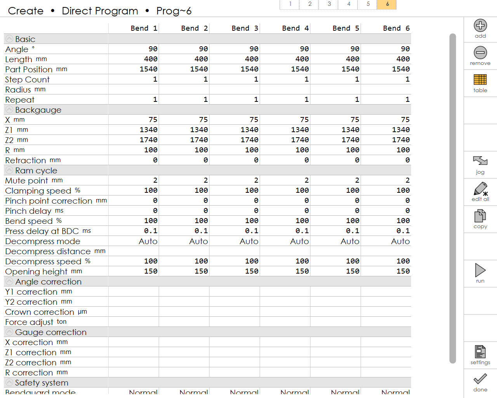

Table Programming
This is used to ease editing multiple bends of the part.

Add / Remove
Touch the Add button on the right panel to add bends into the program and touch the Remove button to remove them.
Jog
Touch the Jog button to bring up the Axis Jog Panel. This allows the user to freely move all the gauge axes using either the handwheel, or by holding down the jog buttons. From this panel, one can record the position of the gauges directly into the program by tapping the teach button there.
Edit All
Touch the Edit All to edit the selected field’s value across all the bends of the part. Tap it again to disable all bend editing.
Copy
Touch the Copy to copy the selected field’s value across all the bends of the part. A warning message (like Set R = 100 for all bends?) is displayed before applying the change.
Run
Touch the Run to run the currently editing part. If the tooling of the part doesn’t differ from the last run setup, setup sheet will be skipped.
Settings
Touch the Settings button on the top left to bring up the Part Settings dialog where you can configure the settings like material, thickness, punch, die etc.